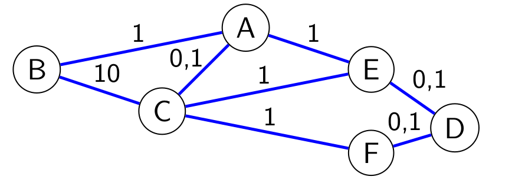
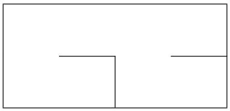
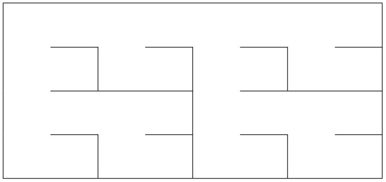

22-NSIJ2ME1 : Corrigé⚓︎
Année : 2022
Centre : Métropole
Jour : 2
Enoncé :
Exercice 1⚓︎
arbres binaires de recherche, la programmation orientée objet et la récursivité
-
a. La taille de cet arbre est 8 (on utilise la définition donnée dans l'énoncé : "la taille d’un arbre est le nombre de nœuds qu’il contient)
b. La hauteur de cet arbre est 4 (on utilise la définition donnée dans l'énoncé : Sa hauteur est le nombre de nœuds du plus long chemin qui joint le nœud racine à l’une des feuilles)
Attention
D'autres auteurs donnent une définition différente de la hauteur dans laquelle la hauteur de l'arbre vide est \(-1\).
c.
graph TD N21(("21")) --> N18(("18")) N21 --> N27(("27")) N18 --> V1[" "] N18 --> N20(("20")) style V1 fill:#FFFFFF, stroke:#FFFFFF linkStyle 2 stroke:#FFFFFF,stroke-width:0pxd. Pour tout noeud de cet arbre, les valeurs figurant dans le sous arbre gauche sont inférieures à la valeur du noeud et celles du sous arbre droit son supérieures. C'est donc bien un arbre binaire de recherche.
c. On a indiqué en rouge le chemin suivi pour insérer 17
graph TD N15(("15")) --> N13(("13")) N15 --> N21(("21")) N13 --> N11(("11")) N13 --> N14(("14")) N21 --> N18(("18")) N21 --> N27(("27")) N18 --> N17(("17")) N18 --> N20(("20")) style N17 fill:#AA2222,stroke:#333 linkStyle 1,4,6 stroke:#FF0000,stroke-width:2px -
a. C'est l'instruction (C)
b.
🐍 Script Pythonreturn Noeud(ins(v,abr.gauche),abr.valeur,abr.droit)c. Chaque noeud (même lorsque ses fils sont
None) génère deux appels récursif (un pour le fils droit et un pour le fils gauche). Chaque arête de l'arbre suivant représente donc un appel récursif :
L'instructiongraph TD N15(("15")) --> N13(("13")) N15 --> N21(("21")) N13 --> N11(("11")) N13 --> N14(("14")) N21 --> N18(("18")) N18 --> V5["None"] N21 --> N27(("27")) N18 --> N20(("20")) N11 --> V1["None"] N11 --> V2["None"] N14 --> V3["None"] N14 --> V4["None"] N27 --> V6["None"] N27 --> V7["None"] N20 --> V8["None"] N20 --> V9["None"] style V5 V6 fill:#DDDDDD,stroke:#000000nb_sup(16,abr)va donc générer un total de 17 appels ànb_sup(l'appel initial plus 16 appels récursifs).d. En utilisant la propriété des arbres binaires de recherche (rappelée à la question 1.d), on sait qu'il suffit de chercher dans le sous arbre droit lorsque
abr.valeur<vpuisque le sous arbre gauche contient des valeurs inférieures àabr.valeur.🐍 Script Pythondef nb_sup(v, abr): if abr is None: return 0 else: if abr.valeur >= v: return 1+nb_sup(v, abr.gauche)+nb_sup(v, abr.droit) return nb_sup(v, abr.droit)
Exercice 2⚓︎
structures de données
-
a. Premiers parcours :
498742 48742 4842Second parcours :
4842 442Troisième parcours :
442 42
Cette pile est donc gagnante.b. La pile B est gagnante, en effet :
Premier parcours :
454920 44920 4420Second parcours :
4420 420Troisième parcours :
420 40 -
Code complété :
🐍 Script Pythondef reduire_triplet_au_sommet(p): a = depiler(p) b = depiler(p) c = sommet(p) if a % 2 != c%2 : empiler(p, b) empiler(p, a)Attention
La méthode
sommetrenvoie le sommet sans le dépiler, suivant le résultat du test de parité on rempile ou non l'élément central du triplet. -
a. La taille minimal d'une pile réductible est 3.
b.
🐍 Script Pythondef parcourir_pile_en_reduisant(p): q = creer_pile_vide() while taille(p) >= 3: reduire_triplet_au_sommet(p) e = depiler(p) empiler(q, e) while not est_vide(q): e = depiler(q) empiler(p,e) return p -
Code complété :
| 🐍 Script Python | |
|---|---|
1 2 3 4 5 6 | |
Bug
La structure de données pile de l'énoncé est mutable. En effet, par exemple depiler(p) retire le sommet de p et donc modifie p. Par conséquent, parcourir_pile_en_reduisant modifie la pile passée en paramètre (en dépit du return qui figure dans cette fonction et laisse penser qu'on renvoie une nouvelle pile). Bien que la correction proposée ci-dessus est probablement la réponse attendue, elle ne fonctionne pas car p et q sont le même objet et le test ligne 3 est vérifié.
Le site écrit nsi propose une correction de Nicolas Reveret avec modification de l'énoncé afin d'éviter ce bug.
Exercice 3⚓︎
réseaux et protocoles de routage
-
a. L'adresse du réseau est
192.168.1.0, en effet le masque de sous réseau est ici255.255.255.0, soit\24en notation cidr) les 24 premiers bits représentent donc l'adresse du réseau. On peut aussi obtenir cette adresse en faisant un et logique bit à bit entre l'adresse de la machine et le masque de sous réseau.b. L'adresse de diffusion est
192.168.1.255, les 8 derniers bits sont à 1. On peut aussi obtenir cette adresse en faisant un ou logique bit à bit entre l'adresse de la machine et l'inverse du masque de sous réseau.c. Le nombre maximal de machines connectées à ce réseau est 254. En effet 256 adresses sont possibles mais deux sont réservées (l'adresse du réseau et l'adresse de diffusion).
d. On peut utiliser n'importe quelle adresse de la forme
192.168.1.xavecxentre 1 et 254 non encore utilisée donc par exemple192.168.1.7. -
a. Les routes possibles sont :
- A E D
- A E C F D
- A B C E D
- A B C F D
- A C E D
- A C F D
b. En cas de panne de l'un des routeurs, les paquets peuvent emprunter une autre route.
-
a. Table de routage de A:
Destination Passe par B B C C D E E E F C b. Le paquet suit le trajet suivant B C E D, en effet en consultant les tables de routage on voit qu'un paquet à destination de D :
- passe par C lorsqu'il est en B
- passe par E lorsqu'il est en C
- passe par D lorsqu'il est en E
c. Nouvelles tables de routage :
- Routeur A
Destination Passe par B B C C D C E C F C - Routeur B
Destination Passe par A A C A D A E A F A - Routeur C
Destination Passe par A A B A D E E E F F d. La nouvelle route est B A C E D
-
a. On calcule les coûts à l'aide de la formule de l'énoncé, à savoir : \(c = \dfrac{10^8}{d}\). Ce qui donne :
- Ethernet : \(\dfrac{10^8}{10^7}=10\)
- Fast Ethernet : \(\dfrac{10^8}{10^8}=1\)
- Fibre : \(\dfrac{10^8}{10^9}=0,1\)
Attention
On rappelle que l'usage de la calculatrice n'était pas autorisée
b. 
c.
Route Coût B C A E D \(11,2\) B A E D \(2,1\) B A C F E D \(2,2\) B A C E D \(1,3\) B A E C F D \(3,2\) B C F D \(11,1\) B C E D \(10,2\) d. Le chemin choisi est celui de coût minimal c'est à dire B A C E D (pour un coût de \(1,3\))
Exercice 4⚓︎
base de données relationnelles et langage SQL
-
a. Les titres des morceaux des Beatles (interprète n° 4) c'est à dire (sur l'extrait de table donné) :
'Hey Jude'et'I Want To hold Your Hand'.Attention
Pour tout le sujet, on ne sait pas si les tables données au début du sujet représentent seulement un extrait ou alors la totalité des données.
b.
🗂️ Requête SQLSELECT nom FROM interpretes WHERE pays="Angleterre;"c. Les titres et année des morceaux classés par ordre croissant de l'année c'est à dire :
titreanneeI Want To hold Your Hand 1963 Like a Rolling Stone 1965 Respect 1967 Hey Jude 1968 Imagine 1970 Smells Like Teen Spirit 1991 d.
🗂️ Requête SQLSELECT COUNT(*) FROM morceaux;e.
🗂️ Requête SQLSELECT titre FROM morceaux ORDER BY titre ASC; -
a. La clé étrangère est
id_interpretequi fait référence la clé primaireid_interpretede la tableinterpretes.b. Le schéma relationnel s'écrit :
interpretes(id_interprete,nom,pays)
morceaux(id_morceaux,titre,annee,#id_interprete)
On rappelle que les clés primaires sont soulignés et qu'on fait précédé les clés étrangères du caractère #. On peut aussi donner un schéma sous forme de tableaux :
c. Cette requête produit une erreur à cause de la contrainte d'unicité. En effet, la clé primaire
id_morceauest unique or un enregistrement avant la valeur 1 existe déjà dans la table. -
a.
🗂️ Requête SQLUPDATE morceaux SET annee = 1971 WHERE id_morceau = 3;Note
On a utilisé la clé primaire du morceau (
3) pour faire la mise à jour, on aurait pu utiliser le titre (Imagine) si un seul morceau porte ce titre.b.
🗂️ Requête SQLINSERT INTO interpretes VALUES (6, 'The Who', 'Angleterre');c.
🗂️ Requête SQLINSERT INTO morceaux VALUES (7, 'My Generation', 1965, 6); -
On utilise une jointure :
🗂️ Requête SQLSELECT titre from morceaux JOIN interpretes ON morceaux.id_interpretes = interpretes.id_interpretes WHERE interpretes.pays = "Etats-Unis";
Exercice 5⚓︎
programmation objet et méthode diviser pour régner
- L'ordre des murs dans le constructeur est nord, est, sud, ouest,
TrueetFalseindiquent respectivement la présence et l'absence. Donc une cellule ayant tous les murs sauf le mur est :🐍 Script Pythoncellule = Cellule(True,False,True,True)
2.
| 🐍 Script Python | |
|---|---|
1 2 3 4 5 6 7 8 9 10 11 12 | |
-
On se trouve dans la situation où
cellule2se trouve au dessus decellule1, pour ouvrir un passage, on doit donc supprimer le mur nord de la cellule 1 et aussi le mur sud de la cellule 2. L'instruction python manquante ligne 19 est donc :🐍 Script Pythoncellule2.murs['S'] = False -
Dans ce cas, on doit supprimer le mur est de la cellule 2 et le mur ouest de la cellule 1.
🐍 Script Python 13 14 15 16 17 18 19 20 21 22 23
def creer_passage(self, c1_lig, c1_col, c2_lig, c2_col): cellule1 = self.grille[c1_lig][c1_col] cellule2 = self.grille[c2_lig][c2_col] # cellule2 au Nord de cellule1 if c1_lig - c2_lig == 1 and c1_col == c2_col: cellule1.murs['N'] = False cellule2.murs['S'] = False # cellule2 à l’Ouest de cellule1 elif c1_col - c2_col ==1 and c1_lig == c2_lig: cellule1.murs['O'] = False cellule2.murs['E'] = False -
🐍 Script Python
def creer_labyrinthe(self, ligne, colonne, haut, long): if haut == 1 : # Cas de base for k in range(colonne,colonne+long-1): self.creer_passage(ligne, k, ligne, k+1) elif long == 1: # Cas de base for k in range(ligne,ligne+haut-1): self.creer_passage(k,colonne,k+1,colonne) else: # Appels récursifs # Code non étudié (Ne pas compléter) -
Le labyrinthe de départ est de dimension 4x8, donc :
- on le découpe verticalement en deux labyrinthes 4x4
- on découpe horizontalement en deux labyrinthes 2x4
- on découpe verticalement en deux labyrinthes 2x2
- on découpe horizontalement en deux labyrinthes 1x2
- on atteint la condition d'arrêt en créant donc des couloirs de 1x2 On remonte en assemblant ces labyrinthes et en créant des ouvertures entre eux comme indiqué dans l'énoncé à savoir le plus au nord pour une coupe verticale et le plus au nord pour une coupe verticale
- Les deux labyrinthes "couloir" de 1x2 s'assemblent pour donner (ouverture ouest) :

- On assemble deux labyrinthes tels que ci-dessus en créant un passage au nord 
- On assemble deux labyrinthes tels que ci-dessus en créant un passage à l'ouest

- La dernière étape est d'assembler deux labyrinthes tels que ci-dessus en créant un passage au nord : 